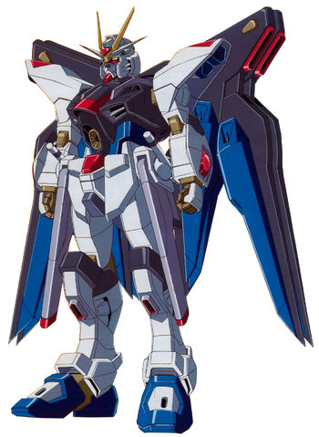

ZGMF-X20A Strike Freedom Gundam
The ZGMF-X20A Strike Freedom Gundam (alias Strike Freedom , Kebebasan ) adalah penerus dari ZGMF-X10A Freedom Gundam .
Muncul di Mobile Suit Gundam SEED Destiny , dipiloti oleh Kira Yamato .
Penerus langsung dari ZGMF-X10A Freedom Gundam , Strike Freedom awalnya dikembangkan oleh ZAFT sebagai mesin prototipe untuk produksi massal akhirnya.
Pengembangan itu sendiri, yang dimulai pada periode waktu yang sama dengan pendahulunya, terlambat dari jadwal dan tidak dapat diselesaikan tepat waktu karena keterbatasan teknis dalam mengembangkan Sistem DRAGOON .
Sebuah mobile suit yang disetel untuk memenuhi kebutuhan Kira Yamato , Strike Freedom memiliki Variable Phase Shift Armor , dan seperti pendahulunya, ZGMF-X10A Freedom Gundam , terutama dipersenjatai dengan senjata jarak jauh yang kuat.
Persenjataannya termasuk CIWS yang dipasang di kepala, meriam balok multi-fase yang dipasang di perut, railgun yang dipasang di pinggul, beam saber dan beam rifle yang dapat digabungkan, pod DRAGOON yang dikendalikan oleh sistem Super DRAGOON yang baru, dan pelindung balok.
Ini didukung oleh Mesin Hyper-Deuterion baru , dan juga dilengkapi dengan Neutron Jammer Canceller dan sistem propulsi Voiture Lumiere .